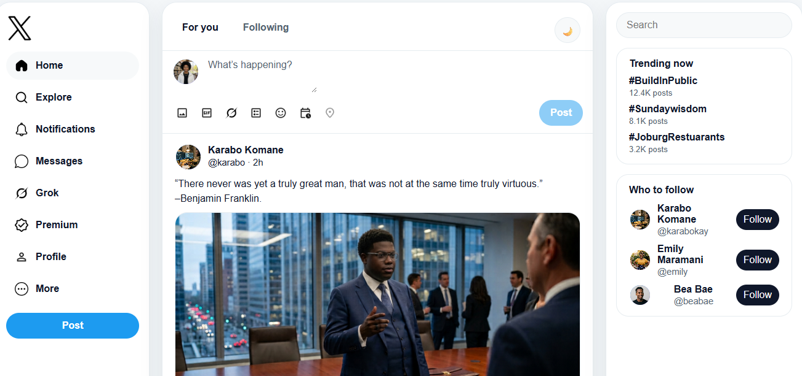

Projects
Tesla Landing Page

A responsive landing page showcasing Tesla's design and features. Built with HTML and CSS to demonstrate modern web design principles.
UI Screenshot

A detailed UI design project demonstrating my skills in creating visually appealing and functional user interfaces.
Google Books

A Google Books search application that allows users to browse and search for books with real-time results. Built with HTML, CSS, and JavaScript.
Netflix Clone Landing Page

A high fidelity landing page recreation featuring a striking hero section, featured video layers, and interactive, collapsible FAQ accordion components.
To-Do List Application

A dynamic task management tool built with structural vanilla JavaScript. Features full task addition, status updates, deletions, and active localStorage persistence.
YouTube Clone

A functional front-end prototype replicating YouTube's core UI and interactive features. Includes responsive navigation, searchable video grid, theme toggle, and video modal with playback capabilities.
Google Keep

A responsive Google Keep-inspired notes app built with HTML, CSS, and JavaScript. It features note creation and editing, archive and bin management, localStorage persistence, search, modal interactions, responsive navigation, and a clean interface inspired by Google Keep.
Google Keep React

Creative React developer building polished note apps with clean UI, responsive design, and practical features. I turn ideas into intuitive web experiences with modern frontend tools.
Twitter/X Clone

A responsive X (formerly Twitter) clone built with HTML, CSS, and JavaScript. This project recreates a social media interface with interactive posting, post deletion, Home and Explore views, modal composers, and a persistent light/dark theme.